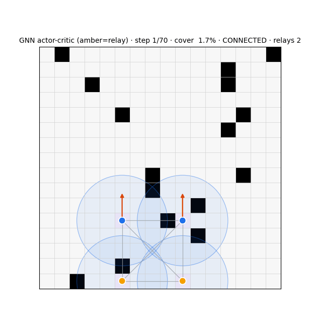
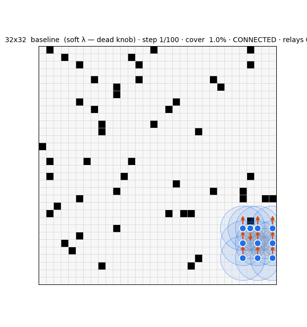
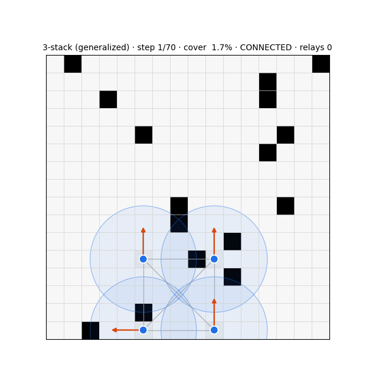

The journey — a layered research program
Zymera is not one experiment. It's a stack of layers unified by a single question — how covert, stealthy misbehaviour propagates from one agent (micro) to mission failure (macro), and how resilient the mission is. This page compartmentalizes the whole program: the theory, the empirical journey, the networks, the paper, the field maps, and the outputs.
The layers
Theory
formalism.tex — a mission-centered formal foundation: micro/macro/bridge, stealth & propagation, resiliency metrics.
Engine + experiments
swarm_explore/ + RedWithinBlue/ — the JAX testbed and the 5-era empirical journey.
The paper
report/ — Stealth Attacks on Swarms: the threat-model + resiliency study with the compromise sweep.
Field maps
marl_taxonomy/ + docs/mission-taxonomy/ — a 70-entry field map and a mission taxonomy.
Dissemination
presentations/ + references/ — the Red-within-Blue / Swarm-Resiliency decks and reference drafts.
The resiliency formalism
A mission-centered formal foundation for the resiliency of decentralized teams under partial observability and adversarial pressure — built around the mission, not the agent, on a Dec-POMDP backbone augmented with time-varying interaction graphs.
- Three layers. Micro (local decisions, policy
πᵢ(·|hᵢ)) · macro (mission state, transition, reward) · the interaction bridge (messagesmⱼ→ᵢ, aggregation, propagation) over the interaction graphGₜ. - Mission as trajectory properties. Health
Φ(s,t)∈[0,1], the viability kernel (states admitting ≥(1−δ) safe completion), and success / degradation / failure defined on trajectories — not on instantaneous coverage. - Deviation & stealth. A compromised set
Cof size k, an activation pattern, a perturbed policy, an amplitude budget (total-variation bound), a stealth budget (a KL bound for local undetectability — the formal meaning of "covert"), and an intervention / break budget. - Propagation. A one-step influence
Eₜ^{i→j}= the TV shift on agent j's input caused by i's deviation, with hypotheses on adversarial amplification (how micro deviations compound into macro damage). - The stealth–degradation trade-off. The formal version of the stealth–damage frontier: how much macro damage is achievable per unit of detectability budget.
- Resiliency metrics. Robustness (worst-case performance ratio), brittleness (sharpness of collapse — the brittleness frontier), elasticity (graceful-degradation rate), and recovery (ratio + time).
- Worked example. Shared exploration with phantom-coverage injection — a covert agent's local lie propagates through frontier sharing into mission-level coverage loss.
k; micro→macro amplification = the propagation formalism + amplification hypotheses; the stealth–damage frontier = the stealth–degradation trade-off; belief-as-signal = mission health on the team posterior.Full formal treatment → theory.html — a dedicated Theory page now carries the complete formalism (all definitions, budgets, propagation, and resiliency metrics).
③ The empirical journeySix eras of experiments
The program began with one agent, not a swarm: train a single RL policy that maximizes coverage of an arbitrary grid world within a horizon T, and have the same policy generalize across world size and obstacle layout. The agent spawns at an unknown location with no prior knowledge of world size, boundaries, or its own position; it sees only a k×k sensor window (radius 3 / 5 / 7), builds its whole map from observations anchored at spawn (relative, not absolute coordinates), and discovers boundaries by reaching them. Deliberately asymmetric information: the policy runs on partial state at inference, while the critic and training-time modules get full ground truth — a free supervision signal.
Three rungs bracket the problem: random walk (lower bound), frontier-based exploration (the fair partial-info comparator), and a Hamiltonian path with full information (the oracle ceiling). The quantitative win condition: the trained policy must beat frontier-based on coverage at horizon T and approach the Hamiltonian ceiling.
① Pure RL from scratch (end-to-end, no priors; reward as sparse-terminal / dense-per-step / hybrid; gradient-based A2C·SAC·DQN·Rainbow vs evolutionary ES·CMA-ES·novelty-search). ② Bootstrapped RL — behaviour-clone frontier or full-info Hamiltonian experts, then RL fine-tune. ③ Learning-augmented heuristic — frontier spine with learned corrections (utility scores, override flags, terrain-aware adjustments) under full-state supervision. ④ Planning with a learned value — search over the agent's belief (map + relative position + remaining horizon), value trained against ground-truth coverage and queried on partial belief — closer to POMCP than AlphaZero. ⑤ Model-based with map completion — a learned model maps the partial map to a distribution over plausible full worlds, then plans against samples or expected utility. Shared scaffolding: an egocentric k×k encoder + accumulated-map encoder (size-invariant by construction), small nets (<1M params), distillation, auxiliary "predict the unseen map" objectives, curriculum, and domain randomization.
The single-agent target was hit and the metric saturated — no headroom left. The open problems live in teams, which motivated abandoning the solo problem and pivoting to the multi-agent / adversarial program below.
3×3 sensor-coverage was too generous → re-baselined to 1×1 visit-coverage; old checkpoints invalidated.
Indep 86.4% ≈ CTDE ≫ joint (70%/4% — fails).
Start distribution is a lever; a connectivity bonus clumps; return-norm accelerates.
97.7%, size-agnostic (zero-shot ~96% @20²/24²).
A pure coverage optimizer disperses the swarm. → connectivity is the problem.
Capability (a head) and behaviour (the reward) are separate knobs.
"3 connected + 1 roamer" scores like a clump → no clump incentive: 89.5%/87% giant/0 collisions.
Action-masking beats env-override; masking-from-scratch collapses → curriculum.
Local "keep ≥1 neighbour" dominates a global Fiedler value under partial info.
The ~69% re-tread ceiling is the 1-step move head, not perception/critic/memory → goal/candidate heads.
Compass + SLAM controller + Emergence; the learned action is a goal over graph regions, the fix for the bottleneck.
Structured symmetry-break (NOT entropy — entropy preserves symmetry); central critic NOT required; anti-crowding general; shared belief neither sufficient nor necessary.
Hard shield + anti-crowding = ~5% gridlock; a soft tether makes it cohesive and mobile.
swarm_explore: certainty field (operate +1, diminishing reward, max-merge gossip), connectivity by choice.
λ=0.5…8 identical (penalty never beats an in-range target); cr-bump helps @16 but not @32. Connectivity is size-blind.
The role policy had to be learned.
129-param MLP, OpenAI-ES, fitness 0.6cov+0.4conn.
Relay action reaches cohesion 78→92 where λ couldn't; gossip a ~5-pt refinement; a no-op-flag bug was caught by an adversarial-audit workflow.
Shared team advantage can't attribute roles → confirmed ES over AC.
32×32 compile too slow → commit to the host-side ES path.
Degree-budget (lose ≤K); hard guardrail beats soft by ~20 pts; re-calibrated at N=10.
Relay→herd centroid + hysteresis → balanced switching.
Cut-vertex relay 94% (vs 3%); transfers to 32×32 (78%).
Snapshot estimator (91%) collapsed OOD → recurrent message-passing belief: 95.9%@16, 72.5±1.2% zero-shot@32, one-shot→80%.
Belief-wiring failed (clump/freeze/suppress); local switcher (60/36) best; relaying can't buy global connectivity at scale (compass breaks 97% of links).
Failure modes are micro→macro amplifications → the governing question: covert single-agent misbehaviour → mission failure + resilience.
Both flanks narrowed; the spatial + role-position + belief + stealth-frontier conjunction is the open seam (the gap).
Loose threads logged for the next push: energy-aware agents — adding a notion of energy / budget to each agent so movement and sensing have a cost. A safety & detectability study spanning control-barrier functions (CBF), Koopman operator views of the dynamics, and formal stealthy-detection metrics. KKT conditions & distributed optimization as the analytic lens on the constrained team objective. And the reward-design distinction that keeps recurring: zero-sum vs. general-sum framing, and agent-vs-agent vs. team-vs-team contests — i.e. how the reward function differs for blue-agent-vs-red-agent versus team-blue-vs-team-red.
The whole stack was assembled from single-agent discovery + navigation primitives — frontier (go to the edge of the known) and A* (shortest path) — which structurally fight connectivity and division of labour. The mission's native primitives are partition (own a region) and marginal credit (be paid for your unique contribution). The lever was never a new module — it's the training signal and the action space.
An adversarial review (ROMA · RODE · CDS · difference-rewards · multi-robot relay work) landed on DEPENDS: for a hard-connectivity regime, explicit role structure is defensible — but RODE's real win is the action-space, not the role variable. We deprecated the "roles emerge from a flat homogeneous policy" proposal; roles return to being load-bearing, credit-driven, and self-sizing.
Paying each agent its marginal contribution (a per-agent advantage, not one shared team reward) rescues coverage on every map: +7 to +23 points at 32²/10, 2–6× over the shared-reward baseline. The predicted huddle→sweep transition, with credit as the control parameter, is real. Credit is the coverage lever.
With every agent paid to cover and no one choosing to hold, the comm graph breaks at 32²/10. Credit moves the operating point along the coverage↔connectivity frontier; it doesn't reach the both-high corner alone.
Adding an explicit relay role — a few agents actively holding the graph so explorers spread freely — the active "anchor" relay dominates in open floor (~85% connectivity and more coverage: a genuine frontier shift), while a static "hold" relay over-relays and hurts. Rooms (chokepoints) and the last points to 90 remain open — pointing at relay positioning and an explicit connectivity-centrality reward.
An identical config reproduced at 51% vs 77% connectivity across runs — the final-iteration connectivity metric is bimodal and high-variance under GPU non-determinism. Coverage effects are solid; connectivity comparisons are being re-measured with deterministic checkpoint evaluation and error bars before any number is trusted or published.
Every model, part by part
| module · era | network | learning | inputs → outputs | size | result |
|---|---|---|---|---|---|
| Frontier-attention AC · E1 | AC + spatial frontier cross-attention | PPO (IPPO/CTDE; return-norm) | grid+agent obs → move + value | ~122k | 97.7% cov; conn 32% |
| Compass · Stack 1 | deterministic heuristic | — | certainty field → goal cell | 0 | ~99%@16 / 76%@32 |
| ES role-switcher · Stack 2 | MLP 7→16→1 + hysteresis | OpenAI-ES; mission-safety fitness | graph-criticality feats → P(relay) | ~145 | cut-vertex relay 94%; transfers |
| Relay-gate · E2 | MLP, 8 feats | ES | gate feats → relay gate | small | @16 97/85/95 |
| GNN actor-critic · E2 (dropped) | GCN actor + central GCN critic | A2C, MC returns | graph → role + value | — | structure-blind |
| Snapshot estimator · E3 (dropped) | GCN + bilinear decoder | supervised BCE | masked feats → adjacency | — | 91%@16 → trivial@32 |
| GCRN belief · Stack 3 | per-node GRU + message-pass + bilinear | privileged distillation, BPTT; k-fold | F_IN=4 → full adjacency | HID 16 | 95.9%@16; 72.5±1.2%@32 |
| Belief-wired switcher · E4 | 11-feat ES MLP + belief relay action | ES | local+belief feats → P(relay)+target | ~209 | 64/13 (the wall) |






Stealth Attacks on Swarms
Frames the contest as a two-player zero-sum POSG with a centralized adversary on k of n agents, instantiated in RedWithinBlue (an open JAX testbed for cooperative grid exploration). A compromise sweep on a 16×16, 5-agent fixture shows:
- Damage manifests jointly across coverage, time-to-completion, and the team's posterior — no single aggregate captures it.
- The attacker's leverage is withholding contribution to the shared belief, not direct destruction. The shared belief is both the coordination substrate and the attack surface.
- Therefore aggregate-coverage monitoring misses the threat, while the posterior itself supplies a resilience signal computable from the team's own scans.
- Positioned as a threat-model and resiliency study, not the design of a specific attack.
Situating the work
marl_taxonomy/— an auto-generated field map of multi-agent autonomous-systems research (2019–2026): 70 entries across the interaction-mode axis (solo / cooperative / collaborative / competitive / mixed-motive), 6 surveys, plus ranked gap and venue reports and Graphviz diagrams.docs/mission-taxonomy/— a mission taxonomy (LaTeX) over classic references: Dudek 1996, Gerkey MRTA 2004, Chung aerial-swarm 2018, Brambilla swarm-robotics 2013, Schranz swarm-behaviours 2020, Amato/Oliehoek Dec-POMDP.- Systematic reviews (this site). The connectivity-role-allocation and covert-misbehaviour gap analyses — see the gap.
references/drafts. Swarm Resiliency, mission family, advML, ExoRL — supporting drafts and reference papers;presentations/holds the Red within Blue and Swarm Resiliency (Boeing PI) decks.